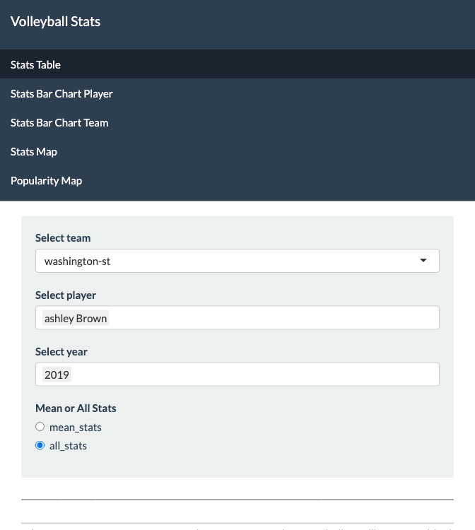

Project 2
Introduction
For my project I was interested in finding a way to better visualize the data that the NCCA (National Collegiate Athletic Association) keeps track of, specifically for the women’s volleyball box scores. Box scores in volleyball are the specific statistics that are kept track of for each player throughout games (Kills (K), Errors (E), Total attempts (TA), Hitting percentage (PCT), Assists (A), Service ace (SA), Service error (SE), Reception error (RE), Dig (DIG), Block solo (BS), Block assist (BA), Blocking error (BE), Ball handling errors (BHE)). In order to do this I decided to make a shiny dashboard that makes it easier for players and/or coaches to visualize their statistics so that they could then apply this to what they needed to coach more, or decide which players to use for certain things such as serving.
The dataset I used is from kaggle.com (with data from the NCAA website) and it consists of all of the women’s NCAA (National Collegiate Athletic Association) volleyball box scores from 2012-2019. Besides box scores, this dataset also includes the first and last names of players, what team they play on, what the opposing team was, as well as other less critical information such as their jersey numbers. The dimensions of this dataset are 781,962 observations (each observation being a player’s stats in a particular game) by 26 variables.
Data Wrangling Process
My dataset started off being extremely large, and was also missing some of the variables that were necessary for building my app. Because of this, I both cut down on some things and added other variables. I first filtered out unnecessary variables such as jersey number. I then created a column that combined the first and last name column, and turned the date column into a year column. I also manually added a state column based on the team and where it was from. Finally, I saved it as an RDS file so that it would be smaller and more manageable to run. My new dataset (small_vb_stats) had 781,962 observations and 17 variables (player, year, team, attackAttempts, attackErrors, ballHandlingErrors, blockAssists, blockSolos, blockingErrors, digs, hittingPercentage, kills, points, receptionErrors, serviceAces, serviceErrors, and state).
My Shiny Dashboard
My dashboard has five main tabs: “Stats Table,” “Stats Bar Chart Player,” “Stats Bar Chart Team,” “Stats Map,” and “Popularity Map.” Each of these tabs allows the user to look at these statistics in different ways.
For my “Stats Table” tab, the dashboard creates a table output after the user selects certain inputs. The user selects a team, the player(s) of interest for that team, and the year(s) of interest for that team. Then the user is also able to select if they would like to look at all the rows for that player(s) (each row being the stats for a certain game), or if they want to look at that player(s) mean stats for the selected year(s). The stats that appear in the table are attackAttempts, attackErrors, ballHandlingErrors, blockAssists, blockSolos, blockingErrors, digs, hittingPercentage, kills, points, receptionErrors, serviceAces, and serviceErrors.
My “Stats Bar Chart Player” tab allows for the player to select a player and year, and then visualize the average of those same stats on a bar chart (with the y-axis being the average value).
The “Stats Bar Chart Teamr” tab is very similar to the “Stats Bar Chart Player” tab, but rather than selecting a player, the user selects a team and the bar chart displays the averages across the entire team for that year.
The “Stats Map” tab shows a map of the United States. The user is then able to select the box score that they are interested in comparing across states. Once they have selected their variable of interest, the map becomes shaded based on the average value of that statistic for that state.
Finally, the “Popularity Map” tab shows a static map of the United States that is shaded based on the number of teams in that state.
A Guide to what the Box Scores Mean
kills: An attack is a player sending the ball over the net in an attempt to score. A kill is recorded whenever an attack is unreturnable. A kill always results in a point.
attackAttempts: An attack attempt is recorded any time a player attempts to attack (hit strategically) the ball into the op- ponent’s court. The ball may be spiked, set, tipped or hit as an overhead contact. There are three possible outcomes of an at- tack attempt. (1) There can be a kill. (2) There can be an attack error.
attackErrors: An error is recorded when an attack attempt gives the opposition a point. Examples of an attack error include an opponent blocking the attack for a point or a player hitting the ball out of bounds. An attack error always results in a point for the other team.
hittingPercentage: Hitting percentage is derived from this formula:
(KILLS – ERRORS) / TOTAL ATTEMPTS = HITTING PERCENTAGE.
serviceAces: A service ace is awarded when a serve can not be returned and results in a point, or when a serve leads to a violation by the opponent that results in a point.
serviceErrors: A service error is charged when the serve is unsuccessful. Examples include: when the serve does not clear the net or lands out of bounds, or when the server commits an error, such as foot faulting.
receptionErrors: A reception error is when a player receiving the serve messes up. This could be by making an unplayable pass after receiving the serve, letting the serve hit the floor nearby or committing an infraction while taking the serve. The reception error is charged to the team if the serve lands between two players who could have taken it or if the receiving team is out of rotation. It is important to note that any time an ace is recorded by the serving team, a reception error must be charged to the receiving team.
digs: A statistical dig is given anytime an attack is successfully defended. The dig can be passed to another player or sent back over the net. A dig that is not kept in play is not awarded in the stats.
blockSolos: A block solo is given when a player successfully blocks an attack attempt for a score by themselves.
blockAssists: If more than one player goes up to block, even if only one of the players touches the ball, and the block results in a point then each player receives a block assist.
blockingErrors: A blocking error occurs when the blocker commits an error that causes the referee to whistle the play dead. Note that a blocked ball going out of bounds or into the net is not a blocking error. Blocking errors include a blocker: reaching over the net, going into the net, throwing the ball, etc. A blocking error results in a kill for the attacker.
ballHandlingErrors: Ball handling errors include double hits, lifted balls, and thrown balls unless they fall under the reception errors, attack errors, or blocking errors listed above.
A Guide to what the Box Scores Mean
This a dashboard can be found on shiny.io at this link: https://willowwhite37.shinyapps.io/final_project_app/